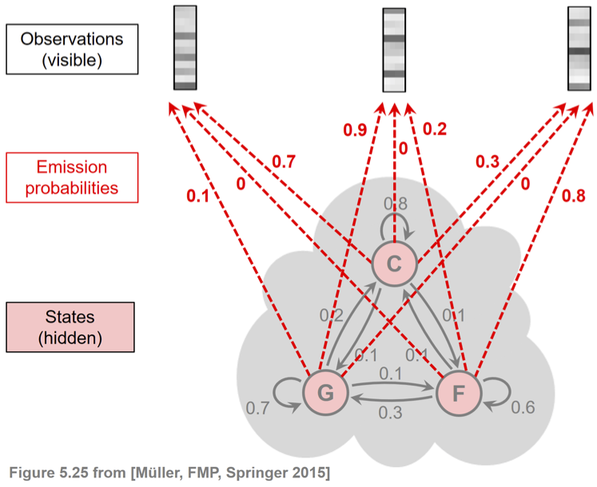
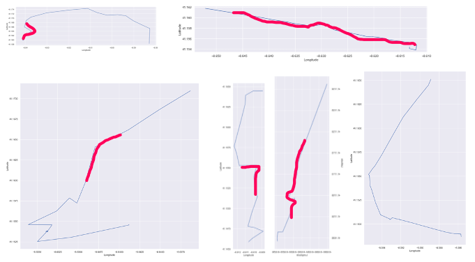

If we want to go from place to place, how many operations can we have? Long time ago, we walked. Later on, we rode horses. After that, we rode bicycles. In the modern days, we drive car. Can transportation make any difference to our life? The answer is yes. For example, in a city with 382 million people and 175.8 square miles area, we can use several numbers to show differences.
If we walk, we can
In future, organized car sharing would be the option. However, we need to figure out how to manage organized car sharing business. If we all share cars with each other and we all become our own bosses, we need to know how to increase revenue and decrease cost.
| Attribute Name | Values |
|---|---|
| TRIP_ID | 1372636858620000000 |
| CALL_TYPE | A |
| ORIGIN_CALL | |
| ORIGIN_STAND | |
| TAXI_ID | |
| TIMESTAMP | 1372636858 |
| DAY_TYPE | A |
| MISSING_DATA | |
| POLYLINE | [[-8.618643, 41.141412], [-8.618499, 41.141376], [-8.620326, 41.14251], [-8.622153, 41.143815], [-8.623953, 41.144373], [-8.62668, 41.144777999999995], [-8.627373, 41.144697], [-8.630226, 41.145210000000006], [-8.632746, 41.14692], [-8.631738, 41.148225], [-8.629938000000001, 41.150385], [-8.62911, 41.151213], [-8.629128, 41.15124], [-8.628786, 41.152203], [-8.628687, 41.15237400000001], [-8.628759, 41.15251799999999], [-8.630838, 41.152680000000004], [-8.632323, 41.153022], [-8.631144, 41.154489], [-8.630828999999999, 41.154507], [-8.630828999999999, 41.154515999999994], [-8.630828999999999, 41.154498000000004], [-8.630838, 41.154489]] |
We collect all of the taxi stands and the moves of all of the taxis every 0.25 second. We want to find the shortest path for the next move to minimize gas cost and maximize revenue. Other than the distances between taxi stands and the chances of moving from one stand to another, we also need to consider if the trip is caused by a passenger call or not.
For all of existing data, we visualize all of the trips below.
We also randomly select several trips and visualized them below. Most of the trips have circles and curves which are not supposed to happen and cost extra gas. That is the part we need to work on. After we use HMM to estimate the shortest path, the circles and curves can be efficiently reduced.
By using HMM we train, we get several potential trips for different moments. 
If we put all of the segments together, we can have the entire trips.